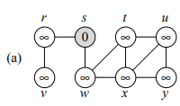

Aquí se encuentran algoritmos que pueden
En este algoritmo se calculan las distanicas desde el nodo inicial a todos los demas.
Hay 2 algoritmos uno que calcula las distancias (BFS) y otro que imprime el camino desde el nodo raiz a otro (PRINT-PATH), siempre que ya se haya calculado el camino con BFS. El algoritmo hace uso de un queue first in first out (FIFO) y la gráfica en forma de listas de adyacencia.
El algoritmo navega la gráfica para marcar las distancias desde el nodo raíz a todas las demas. Tiene tiempo de ejecución: \( T(n) = O (V+ E) \). Con V vertices y E aristas (edges).
Código de (Cormen, 2001).
Thomas H. Cormen, C. (2001). Introduction to algorithms (p. 595). The MIT Press.
El algoritmo navega la gráfica para marcar las distancias desde el nodo raíz a todas las demas. Tiene tiempo de ejecución \( T(n) \) lineal segun el número de vertices que navega e imprime para llegar al nodo buscado.
Código de (Cormen, 2001).
Thomas H. Cormen, C. (2001). Introduction to algorithms (p. 601). The MIT Press.
Realizada en Javascript. Queue se implementa como lista para usarse más facil y libremente.
Entrada:Recibe la gráfica en forma de lista de adyacencia, comas "," separa el nodo con los adyacentes, mientras que enter (o nueva linea) separa cada nodo en la lista.Nota: Ingrese el primer nodo como la raíz. Evite espacios, o caracteres extra, ya que pueden ser leidos como otros nodos o conexiones.
La imagen muestra el ejemplo que viene predeterminado.

\( G \) =
Matrices \( c \) y \( b\) que crean la solucion de la subseccion. Junto con la subseccion más larga.
Y tiempo de ejecución de LCS-LENGTH, PRINT-LCS y la impresion de todo al final sin contar llamadas u operaciones extras en JavaScript (dado que PRINT-LCS requiere \( b\) esta es la mejor forma de correr todo y simplificar las operaciones al usuario).
\( Respuesta \; \)